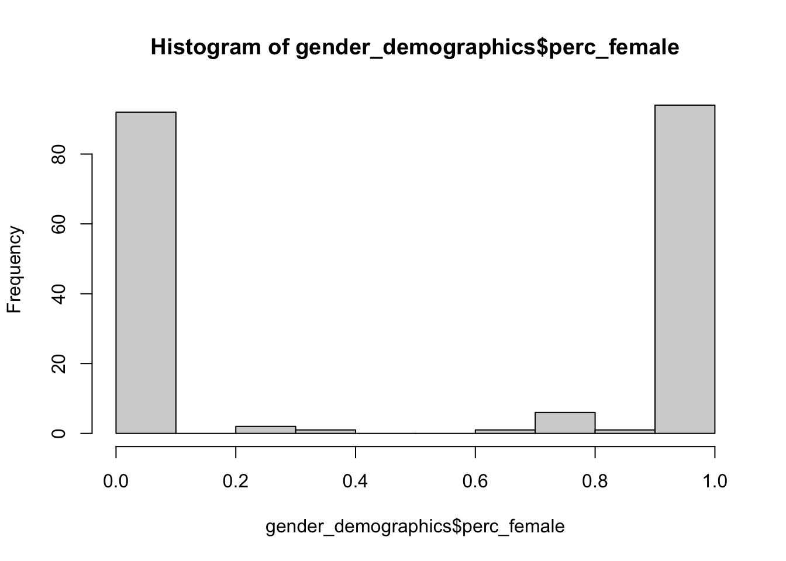
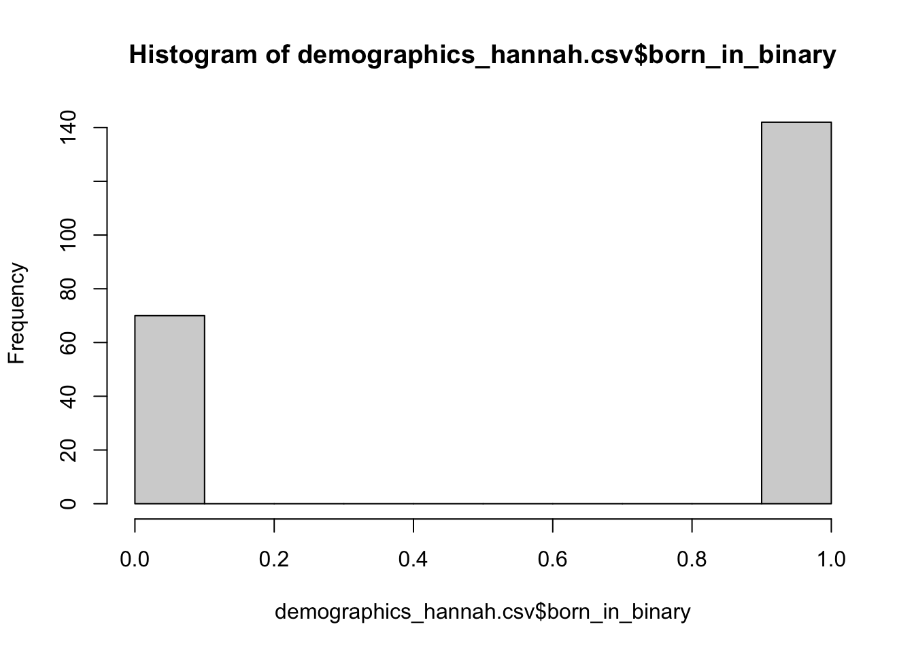
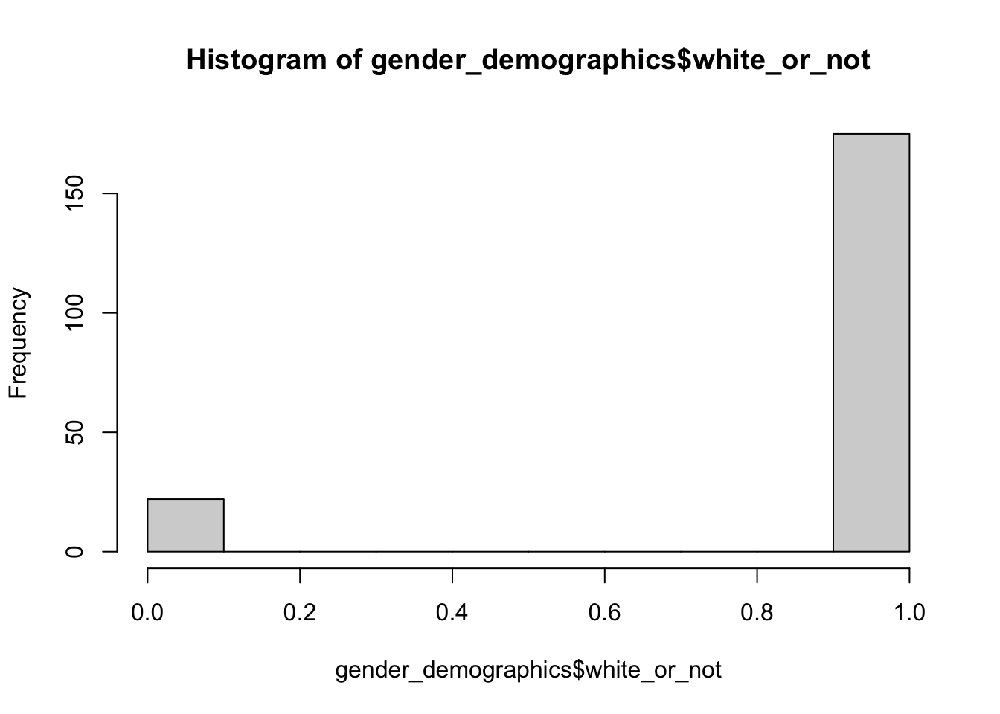
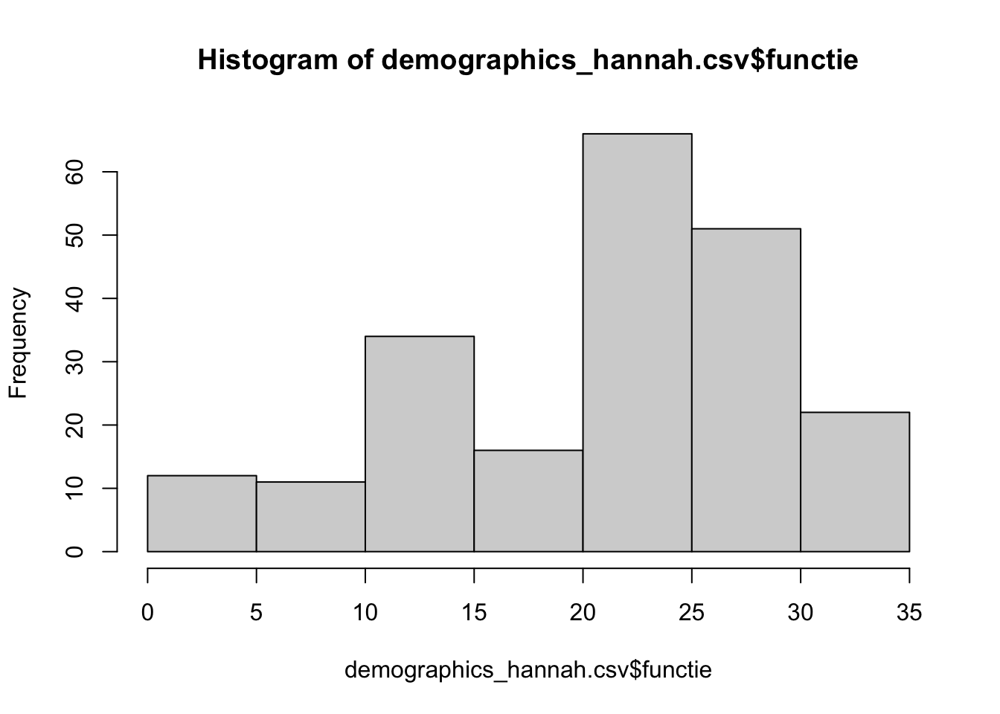

Descriptives (graphic)
2024-10-08
1 Let’s Get Some Info(graphics)
gender_demographics %>%
mutate(
perc_female = ifelse(perc_female >= 0.5, 1, 0)
) %>%
count(perc_female)## perc_female n
## 1 0 95
## 2 1 102
## 3 NA 17hist(gender_demographics$perc_female)
gender_demographics %>%
count(born_in_binary)## born_in_binary n
## 1 0 66
## 2 1 131
## 3 NA 17hist(gender_demographics$born_in_binary)
gender_demographics %>%
count(white_or_not)## white_or_not n
## 1 0 22
## 2 1 175
## 3 NA 17hist(gender_demographics$white_or_not)
gender_demographics %>%
count(Functie.22)## Functie.22 n
## 1 Associate researcher 1
## 2 Bijzonder hoogleraar 4
## 3 Docent 2
## 4 Docent? 1
## 5 Emeritus hoogleraar 1
## 6 External Phd 4
## 7 Gepensioneerd docent sociologie 1
## 8 Guest Researcher 2
## 9 Hoofdonderzoeker 1
## 10 Hoogleraar 31
## 11 Hoogleraar + Universitair hoofddocent 1
## 12 Lecturer 2
## 13 Lecturer and Researcher 1
## 14 Lecturer/researcher 1
## 15 Onderzoeker 9
## 16 Onderzoeker/Lecturer 1
## 17 Onderzoeks- en onderwijsmedewerker 1
## 18 Other researcher 1
## 19 PhD Student 56
## 20 Phd & postdoc 1
## 21 Postdoc 6
## 22 Scholarship student 1
## 23 Senior Researcher 1
## 24 Senior lecturer 1
## 25 Senior researcher 1
## 26 Universitair docent 44
## 27 Universitair hoofddocent 17
## 28 <NA> 21hist(gender_demographics$functie)
gender_demographics %>%
count(hoogleraar)## hoogleraar n
## 1 0 182
## 2 1 29
## 3 NA 3hist(gender_demographics$hoogleraar)
LS0tCnRpdGxlOiAiRGVzY3JpcHRpdmVzIChncmFwaGljKSIKb3V0cHV0OiBodG1sX2RvY3VtZW50CmRhdGU6ICIyMDI0LTEwLTA4IgotLS0KYGBge3IgcGFja2FnZXMsIGluY2x1ZGUgPSBGfQpyZXF1aXJlKHRpZHl2ZXJzZSkKcmVxdWlyZShpZ3JhcGgpCnJlcXVpcmUoc2hpbnkpCnJlcXVpcmUoUlNpZW5hKQpyZXF1aXJlKHJtZGZvcm1hdHMpCnJlcXVpcmUocHJldHR5ZG9jKQpyZXF1aXJlKGhyYnJ0aGVtZXMpCnJlcXVpcmUodGludCkKcmVxdWlyZSh0dWZ0ZSkKcmVxdWlyZShwc3ljaCkKYGBgCmBgYHtyIHNldHVwLCBpbmNsdWRlPUZBTFNFfQpnZW5kZXJfZGVtb2dyYXBoaWNzIDwtIHJlYWRfcmRzKCJnZW5kZXJfZGVtb2dyYXBoaWNzLnJkcyIpCmBgYAoKIyBMZXQncyBHZXQgU29tZSBJbmZvKGdyYXBoaWNzKQpgYGB7cn0KZ2VuZGVyX2RlbW9ncmFwaGljcyAlPiUKICBtdXRhdGUoCiAgICBwZXJjX2ZlbWFsZSA9IGlmZWxzZShwZXJjX2ZlbWFsZSA+PSAwLjUsIDEsIDApCiAgKSAlPiUKICBjb3VudChwZXJjX2ZlbWFsZSkKaGlzdChnZW5kZXJfZGVtb2dyYXBoaWNzJHBlcmNfZmVtYWxlKQpnZW5kZXJfZGVtb2dyYXBoaWNzICU+JQogIGNvdW50KGJvcm5faW5fYmluYXJ5KQpoaXN0KGdlbmRlcl9kZW1vZ3JhcGhpY3MkYm9ybl9pbl9iaW5hcnkpCmdlbmRlcl9kZW1vZ3JhcGhpY3MgJT4lCiAgY291bnQod2hpdGVfb3Jfbm90KQpoaXN0KGdlbmRlcl9kZW1vZ3JhcGhpY3Mkd2hpdGVfb3Jfbm90KQpnZW5kZXJfZGVtb2dyYXBoaWNzICU+JQogIGNvdW50KEZ1bmN0aWUuMjIpCmhpc3QoZ2VuZGVyX2RlbW9ncmFwaGljcyRmdW5jdGllKQpnZW5kZXJfZGVtb2dyYXBoaWNzICU+JQogIGNvdW50KGhvb2dsZXJhYXIpCmhpc3QoZ2VuZGVyX2RlbW9ncmFwaGljcyRob29nbGVyYWFyKQpgYGAKCgoKCg==